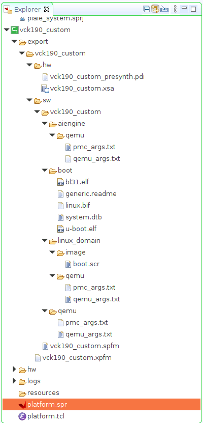

Versal カスタム プラットフォーム作成チュートリアル |
手順 3: Vitis プラットフォームの作成¶
Vitis プラットフォームは、Vitis GUI または XSCT コマンド ラインを使用して作成できます。Vitis IDE では、1 つの XSA でプラットフォームを作成できます。XSCT では、1 つの XSA ファイルまたは 2 つの XSA ファイルを使用してプラットフォームを作成できます。どちらのフローについても次で説明します。
プラットフォーム パッケージの準備¶
Vitis プラットフォームの作成フローに必要なすべてのファイルを 1 つのディレクトリに保存します。
必須のプラットフォーム作成のソース ファイル
| コンポーネント | 従来のパスまたはファイル名 | 内容 |
|---|---|---|
| BOOT.BIN 内のブートコンポーネント | boot/bl31.elfboot/u-boot.elfboot/system.dtb | linux.bif で参照されるすべてのコンポーネントは、このフォルダーに含まれます。 |
| SD カードの FAT32 パーティションのブート コンポーネント | sd_dir/boot.scr | SD カードの FAT32 パーティションに保存する U-Boot コンフィギュレーション ファイル |
オプションのプラットフォーム作成ソース ファイル
| コンポーネント | 従来のパスまたはファイル名 | 内容 |
|---|---|---|
| ブート イメージ記述ファイル (BIF) | boot/linux.bif | BIF は、BOOT.BIN のレイアウトを記述します。Vitis では、汎用的に使用するデフォルトの BIF を生成できます。ユーザーは必要に応じてカスタマイズされた BIF を提供できます。 |
| Linux ソフトウェア コンポーネント | sw_comp/Imagesw_comp/rootfs.ext4sw_comp/sysroots | アプリケーション作成および Linux ブート用の Linux コンポーネント。これらは、プラットフォームにパッケージすることも、スタンドアロンのままで使用することもできます。また、アプリケーション作成プロセス中にリンクすることもできます。 |
Linux ソフトウェア コンポーネントは、プラットフォームのハードウェア デザインが変更されるほとんどの場合に再利用できます。そのため、これらはプラットフォームにはパッケージしません。ここでは、次の手順のアプリケーション作成の準備をします。
Vitis プラットフォームの作成フローに必要なすべてのファイルを保存します。このディレクトリを step3_pfm ディレクトリと呼びます。
ブート コンポーネントを準備し、同じディレクトリに格納します。これらは PetaLinux によって生成され、もともと <your_petalinux_dir>/images/linux ディレクトリにあります。理解しやすいように、これらのファイルを step3_Pfm/boot にコピーしておきます。ここでは、これらのファイルを <your_petalinux_dir>/images/linux ディレクトリに保存しています。これは、PetaLinux 設定をアップデートして PetaLinux をビルドし直す必要がある場合は、プラットフォームをクリーンにして Vitis でビルドし直し、新しいプラットフォームを生成する必要があるからです。毎回手動でコピーする必要はありません。これらのファイルは、アプリケーションをパッケージする際に最終的な BOOT.BIN を作成するためのソースです。プラットフォームを作成すると、これらのファイルはプラットフォーム出力ディレクトリにコピーされます。
bl31.elf
u-boot.elf
system.dtb
step3_pfm/sd_dir ディレクトリを準備します。このディレクトリの内容は、v++ パッケージ ツールにより、SD カード イメージの FAT32 パーティションにパッケージされます。
<your_petalinux_dir>/images/linux ディレクトリの boot.scr を step3_pfm/sd_dir ディレクトリにコピーします。これは、U-Boot を初期化するスクリプトです。U-Boot は、ブート プロセス中に fat32 パーティションから読み出されます。
アプリケーション作成用の Linux ソフトウェア コンポーネントを準備します。プラットフォーム パッケージでは、これらを追加したり除外したりできます。これらのコンポーネントは、ソフトウェア コンポーネントのサイズにより通常はプラットフォーム外に保持されるので、同じアーキテクチャを持つ複数のプラットフォーム間で再利用できます。その一方で、Linux ソフトウェア コンポーネントをプラットフォームに保持しておくと、プラットフォームをチーム間で提供する際に、さまざまな組み合わせが発生するのを回避できます。ここでは、 Linux ソフトウェア コンポーネントをスタンドアロンのままにします。
# Create sw_comp directory cd step3_pfm mkdir sw_comp cd sw_comp # Copy Linux kernel image cp <your_petalinux_dir>/images/linux/Image . # Copy EXT4 Root Filesystem cp <your_petalinux_dir>/images/linux/rootfs.ext4 . # Install sysroot to this directory <your_petalinux_dir>/images/linux/sdk.sh -d ./ -y
準備したディレクトリ構造は、次のようになります。
tree -L 3 --charset ascii . |-- boot | |-- bl31.elf | |-- system.dtb | `-- u-boot.elf |-- sd_dir | `-- boot.scr |-- sw_comp | |-- environment-setup-cortexa72-cortexa53-xilinx-linux | |-- Image | |-- rootfs.ext4 | |-- site-config-cortexa72-cortexa53-xilinx-linux | |-- sysroots | | |-- cortexa72-cortexa53-xilinx-linux | | `-- x86_64-petalinux-linux | `-- version-cortexa72-cortexa53-xilinx-linux注記: ファースト トラック スクリプトを実行する場合、プラットフォーム作成スクリプト (xsct_create_pfm.tcl) が BIF ファイルのコンポーネントのブート ディレクトリとして <petalinux_project>/images/linux ディレクトリを使用するので、ブート ディレクトリには linux.bif ファイルのみが含まれます。GUI フローを簡単にするため、これらのコンポーネントをブート ディレクトリにコピーしておきます。
プラットフォーム パッケージ¶
2 つの XSA ファイルをプラットフォームにパッケージするため、この例では主に XSCT フローを使用します。ハードウェア エミュレーションが不要な場合は、Vitis IDE フローを使用することもできます。
注記: Vitis IDE では、将来的に 2 つの XSA を含む Vitis プラットフォームを作成できるようになる予定です。
XSCT を使用して Vitis プラットフォームを作成する詳細な手順は、ここをクリックしてください。
XSCT コマンドを使用して Tcl ファイルを作成します。
# Create a platform project platform create -name vck190_custom \ -desc "A custom platform VCK190 platform" \ -hw <Hardware>.xsa \ -hw_emu <Hardware_Emulation>.xsa \ -out <Output_Directory> \ -no-boot-bsp # If you don't need to support hardware emulation, you can omit the option -hw_emu and its value. # AIE domain domain create -name aiengine -os aie_runtime -proc ai_engine # Add Linux domain domain create -name xrt -proc psv_cortexa72 -os linux -arch {64-bit} -runtime {ocl} -sd-dir {./sd_dir} -bootmode {sd} domain config -boot {./boot} domain config -generate-bif domain config -qemu-data ./boot platform write platform generate注記: スクリプト内のファイル名とディレクトリ名をプロジェクト ファイルの場所に置き換えてください。
注記: ハードウェア エミュレーションをサポートする必要がない場合は、
platform createコマンドの-hw_emuオプションとその値を省略できます。
platform create コマンドには、次の入力値が必要です。
-name: プラットフォーム名-hw: ハードウェア XSA ファイルのディレクトリ-hw_emu: ハードウェア エミュレーション XSA ファイルのディレクトリ-out: プラットフォームの出力パス-sd-dir: SD カード イメージの FAT32 パーティションに含めるファイルを含むディレクトリ。
domain コマンドは、1 つの AI エンジン ドメインと 1 つの Linux ドメインを設定します。Linux ドメインには SD ブート モードがあります。この場合、./sd_dir 内のファイルが使用されて、SD カード イメージの FAT32 パーティションと ./boot ディレクトリにあるファイルが形成され、boot.bin が生成されます。必要なファイルは、プラットフォーム パッケージの準備のこれらのディレクトリに保存されています。
これらの値は、変数を実際の値に置き換えてスクリプトに直接渡すか、Tcl スクリプトのヘッダーで定義するか、このスクリプトを呼び出すときに値を XSCT に渡すことができます。
次は、xsct_create_pfm.tcl のすべての内容をハード コードした場合の XSCT の呼び出す例です。
xsct xsct_create_pfm.tclカスタマイズしやすくするため、ref_files ディレクトリ内の Makefile および xsct_create_pfm.tcl 例では、変数を使用してファイル名およびディレクトリの場所を表しています。これらの例を参照し、スクリプトのプログラム性を高めてください。
Vitis IDE を使用して Vitis プラットフォームを作成する詳細な手順は、ここをクリックしてください
まず、Vivado で生成された XSA ファイルを使用して、Vitis プラットフォーム プロジェクトを作成します。
Vitis を起動します。
# You are still in step3_pfm directory # Setup Vitis environment source <Vitis_Install_Directory>/settings64.sh # Launch Vitis, using ./platform_repo directory as workspace vitis -workspace ./platform_repo &
プラットフォーム プロジェクトを作成します。
Vitis IDE で [File] → [New] → [Platform Project] をクリックして、プラットフォーム プロジェクトを作成します。
プロジェクト名を入力します。この例では、
vck190_customと入力して [Next] をクリックします。[Platform] ページで [Browse] ボタンをクリックし、Vivado で生成された XSA ファイルを選択します。この場合、
<Your Vivado Project Directory>/vck190_custom.xsaにあります。[Next] をクリックします。オペレーティング システムに [linux] を設定します。
プロセッサに [psv_cortexa72] を設定します。
[Finish] をクリックします。

[Platform Settings] ビューで Linux ドメイン設定を指定します。
[linux on psv_cortexa72] ドメインをクリックします。
この行の右側にある編集ボタンをクリックして、[Display Name] を
xrtに更新します。これで、XRT がインストールされ、アクセラレーション アプリケーションを実行できる Linux ドメインであることを示します。[Bif file] の設定: ドロップダウンボタンをクリックして、[Generate BIF] を選択します。BIF ファイルは、bin リソース ディレクトリに生成されます。
[Boot Components Directory]: step3_pfm/boot/ を選択し、[OK] をクリックします。Bootgen は、このディレクトリの BIF で参照されるブート コンポーネントを探し、BOOT.BIN を生成します。
[FAT32 Partition Directory]: step3_pfm/sd_dir を選択し、[OK] をクリックします。このディレクトリのファイルは、SD カード イメージの FAT32 パーティションにコピーされます。
注記: [FAT32 Partition Directory] オプション名は、以前のリリースでは [Linux Image Directory] で、Linux の起動に initramfs が使用される際に定義されました。この場合、Linux カーネル イメージ、またはカーネル イメージを含む image.ub、rootfs、およびデバイス ツリーが、すべて SD カードの FAT32 パーティションに含まれます。EXT4 rootfs を使用するようにしたので、boot.scr のみを FAT32 パーティションに含める必要があります。オプション名は、この変更を反映するためにアップデートされています。
注記: [Linux Rootfs] と [Sysroot Directory] は Linux ドメインの場合はオプションです。これらは、プラットフォームまたはアプリケーションのいずれかで提供できます。これらのコンポーネントは複数のプラットフォーム間で簡単に再利用できるため、アプリケーション作成段階で追加します。
(オプション) Linux ドメイン エミュレーション設定を更新します。
Vitis IDE または XSCT は、QEMU 引数と PMC QEMU 引数を、Vitis インストール ディレクトリのデフォルト ファイルに設定します。これらのデフォルト設定を使用すると、QEMU で Linux を正しく起動できるはずです。引数をアップデートする必要がある場合は、引数をローカルにコピーし、その新しいパスを Linux ドメイン コンフィギュレーションで設定できます。
QEMU がいくつかのブート コンポーネントを使用する可能性があるため、QEMU Data を step3_pfm/boot ディレクトリに設定します。
AI エンジン ドメインを追加します。
[Add domain] アイコンをクリックします。

[Name] を aiengine に設定します。
OS を aie_runtime に変更します。
ほかの設定をデフォルトのままにして、[OK] をクリックします。

注記: Vitis IDE と XSCT は AI エンジン ドメイン用の QEMU 引数を自動的に追加します。
Vivado の [Explorer] ビューで vck190_custom プロジェクトを選択し、[Build] ボタンをクリックしてプラットフォームを生成します。

注記: 生成されたプラットフォームがエクスポート ディレクトリに保存されます。FSBL および PMU を再構築するのに必要な場合は、BSP およびソース ファイルも提供され、プラットフォームと関連付けられます。プラットフォームがアプリケーション開発に使用できるようになりました。

次の手順¶
ファースト トラック¶
Vitis プラットフォームをパッケージするスクリプトが提供されています。
これらのスクリプトを使用するには、次の手順を実行します。
ビルドを実行します。
# cd to the step directory, e.g. cd step3_pfm make
生成されたファイルをクリーンアップするには、次を実行します。
make clean
Copyright© 2021 Xilinx